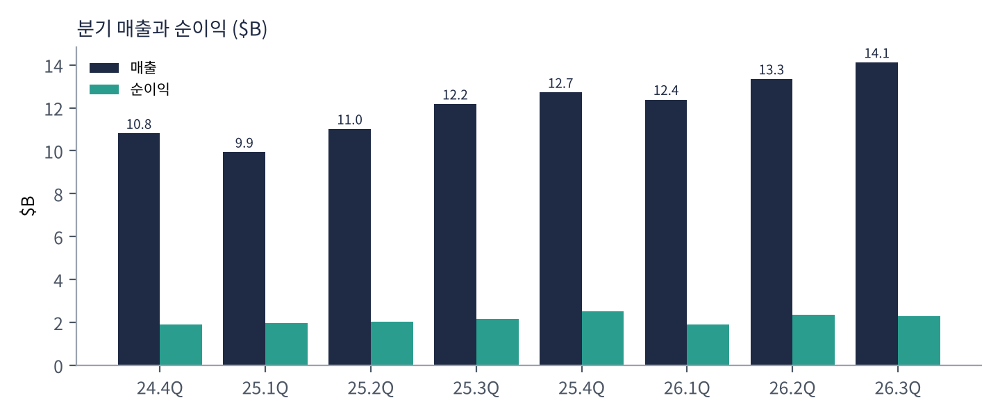
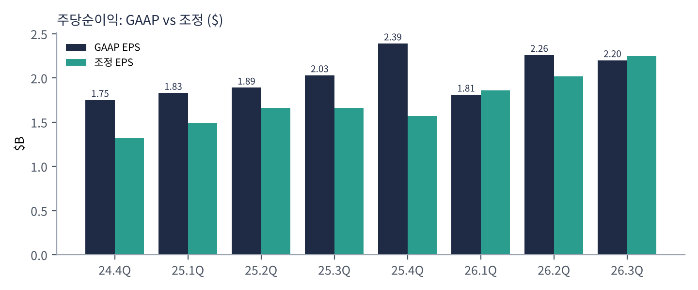
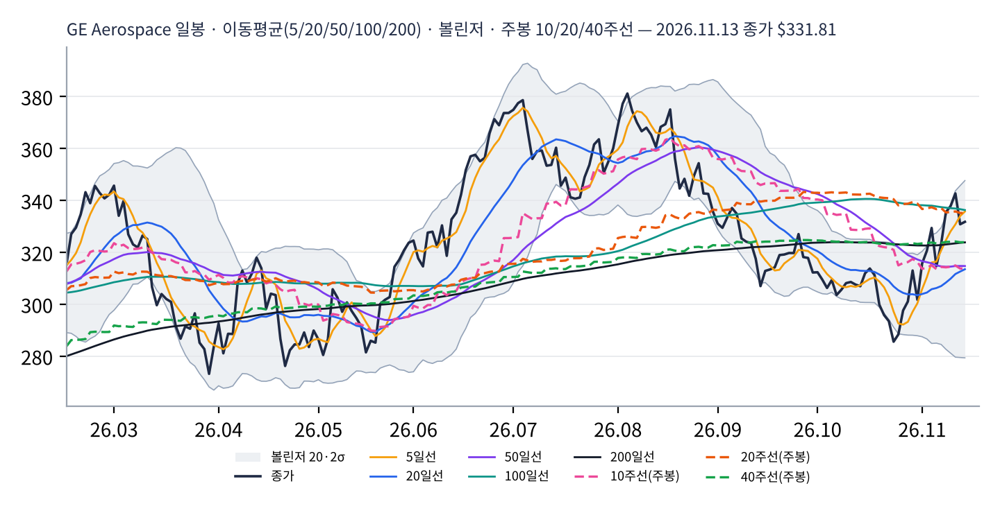
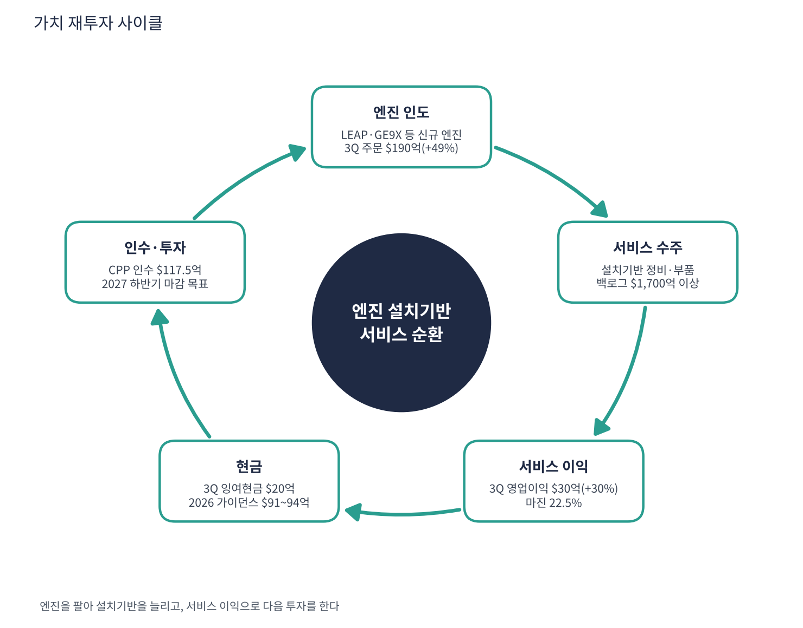

GE 에어로스페이스는 민항기·군용기 제트엔진을 만들고 설치된 엔진의 정비·부품 서비스로 돈을 버는 미국 항공우주 기업이다. 이 보고서 시점의 매출은 연 $520억 수준(TTM)이다. 신규 엔진 주문이 3Q에 49% 늘고 서비스 백로그가 $1,700억을 넘었지만, 주가는 GAAP PER 38배·조정 PER 43배로 이미 높게 반영된 회사다.
| 항목 | 내용 |
|---|---|
| 종목 | GE Aerospace (GE) · NYSE · 항공우주·방산 · 본사 미국 오하이오주 에번데일 |
| 밸류에이션 | PER 38.3배(GAAP TTM), 조정 기준 약 43.1배 · P/S 6.55배 (11/13 종가 $331.81) |
| 최근 분기(3Q26) | 매출 $141.2억(+16%, GAAP), 순이익 $22.9억, GAAP EPS $2.20, 조정 EPS $2.25(+36%) |
| 수주·백로그 | 주문 $190억(+49%), 상업 서비스 백로그 $1,700억 이상, 잔여 계약 $2,121억 |
| 현금·부채 | 현금 약 $88억, 총차입금 약 $204억, TTM 잉여현금 약 $80억, TTM EBITDA 약 $108억(스캐너) |
| 가이던스(2026) | 조정 매출 +19~20%, 영업이익 $109~110억, 조정 EPS $8.00~8.10, 잉여현금 $91~94억 — 상향 |
| 다음 일정 | 4Q26 실적 2027.1.21 예정(트레이딩뷰). CPP 인수($117.5억)는 2027년 하반기 마감 목표 |
| 직책 | 인물 | 역할·특징 |
|---|---|---|
| 회장·CEO | H. 로런스 컬프 주니어 | GE 해체 후 항공우주 단일 회사로 이끈 경영자 |
경영 스타일: '린(Lean) 방식으로 서비스·정비 이익을 키운다'. 3Q 영업이익이 약 $30억(+30%)이고 마진이 22.5%로, 가이던스를 올렸다. 대형 인수(CPP, 약 $117.5억)는 현금 약 $70억과 신규 차입으로 충당한다.
LEAP 등 신규 엔진이 설치기반을 넓히고, 이 엔진이 쓰는 동안 정비·부품 서비스 매출이 쌓인다. GE9X는 중간 시일 인증 후 매출을 인식하며, 올해 말 인증이 목표다.
경영진은 서비스 백로그와 신규 주문 증가를 근거로 가이던스를 올렸다. 다만 3Q 잉여현금은 매출채권 증가(약 $17억 유출)로 전년 대비 14% 줄었다.
다음 실적발표는 세 가지 질문에 답하는 자리다.
1. 현금이 이번 분기에 개선되나?
2. 악재 '높은 밸류에이션' 부담이 줄어드나?
3. 악재 '현금 전환 변동' 부담이 줄어드나?
한 줄 판정 규칙: 첫 질문의 현금이 좋아지면 약한 고리가 풀리고, 그렇지 않으면 현재 사이클의 약점이 그대로 남는다.
일정: 다음 발표일은 확인 필요(이번 분기 발표 후 일정 미확정). 위 현재값은 이 보고서의 기존 숫자다.
| 분기 | 매출 | 순이익 | EPS | 조정 EPS | 특이 사항 |
|---|---|---|---|---|---|
| 2024.4Q | $108.1억 | $19.0억 | 1.75 | 1.32 | |
| 2025.1Q | $99.3억 | $19.7억 | 1.83 | 1.49 | |
| 2025.2Q | $110.2억 | $20.3억 | 1.89 | 1.66 | |
| 2025.3Q | $121.8억 | $21.6억 | 2.03 | 1.66 | |
| 2025.4Q | $127.2억 | $25.3억 | 2.39 | 1.57 | GAAP EPS가 조정 EPS보다 높음(원인 미확인) |
| 2026.1Q | $123.9억 | $19.0억 | 1.81 | 1.86 | |
| 2026.2Q | $133.5억 | $23.7억 | 2.26 | 2.02 | |
| 2026.3Q | $141.2억 | $22.9억 | 2.20 | 2.25 | 주문 $190억(+49%), 조정 EPS +36% |


흐름 요약: 분기 매출은 $99~141억으로 늘어 3Q26이 8분기 중 최대다. 조정 EPS는 $1.32에서 $2.25로 올라 3Q26이 최고다. GAAP EPS는 $1.75~2.39 범위에서 움직이고 4Q25는 조정 EPS보다 $0.82 높았는데 원인은 확인하지 못했다. 3Q26 GAAP EPS $2.20은 트레이딩뷰 값이고 회사 발표 계속사업 GAAP EPS는 $2.32다. 영업이익과 분기 설비투자는 이 자료에서 구하지 못해 표에서 뺐다.
| 항목 | 최근 값 | 비고 |
|---|---|---|
| 주문(3Q) | $190억 (+49%) | 신규 엔진·서비스 합계 증가 |
| 상업 서비스 백로그 | $1,700억 이상 | 정비·부품 서비스가 이익의 핵심 |
| 잔여 계약(RPO) | $2,121억 | 회사 발표 |
| 영업이익(3Q) | 약 $30억 (+30%) | 마진 22.5% |
신규 엔진이 설치기반을 키우고 서비스가 돈을 번다. 부문별 3Q 매출 수치는 이 자료에서 구하지 못해 뺐다. 잉여현금은 3Q $20억(-14%), 9개월 $67억(+13%)으로 분기 변동이 크다.
GE는 '항공우주 단일 회사'로 방향을 정했다.
| 축 | 최근 움직임 |
|---|---|
| 엔진 | LEAP·GE9X 인도 확대, GE9X 인증 목표 연말 |
| 서비스 | 상업 서비스 백로그 $1,700억 이상 |
| 인수 | CPP 인수 약 $117.5억, 2027 하반기 마감 목표 |
| 가이던스 | 2026 조정 EPS $8.00~8.10으로 상향 |

| 이동평균 | 값 | 종가 대비 | 해석 |
|---|---|---|---|
| 5일선 | $335.77 | -1.2% | 현재가가 위 |
| 20일선 | $313.55 | +5.8% | 현재가가 위 |
| 50일선 | $314.78 | +5.4% | 현재가가 위 |
| 100일선 | $336.34 | -1.3% | 현재가가 아래 |
| 200일선 | $323.89 | +2.4% | 현재가가 약 2% 위 |
주봉 흐름: 2025년 11월 $288~307 → 2026년 2월 $343 → 4월 저점 $269 → 6~8월 $355~389(8/6 고점) → 10월 $286~314 → 11/13 주 $331.8. 100일선($336)이 바로 위에서 저항으로 작용한다.
| 규칙 | 기준 | 현재 값 | 신호 |
|---|---|---|---|
| 장기 추세 필터 | 종가 vs 200일선 | $331.81 > $323.89 | 매수 |
| 중장기 교차 | 50일선 vs 200일선 | $314.78 < $323.89 | 매도 |
| 단기 교차 | 20일선 vs 50일선 | $313.55 < $314.78 | 매도 |
| 돈키언 채널 | 55일 고가 $345.63 / 저가 $278.37 | 중간값 $312.00 위 | 매수 |
| 1개월 모멘텀 | 21거래일 수익률 | +6.3% (기준 $312.00) | 매수 |
| 3개월 모멘텀 | 63거래일 수익률 | -10.2% (기준 $369.43) | 매도 |
| 6개월 모멘텀 | 126거래일 수익률 | +17.9% (기준 $281.53) | 매수 |
| 12개월 모멘텀 | 252거래일 수익률 | +7.4% (기준 $309.02) | 매수 |
| 종합 (8개 평균) | +0.25 | 매수 우위 |
해석: 8개 신호 중 5개 매수, 3개 매도(점수 +0.25)로 약한 매수 우위다. 50/200·20/50은 아직 매도이고 3개월 모멘텀은 8월 고점대 기준이라 매도다. 14일 ATR $11.72 (3.5%).
| 가격 | 무엇이 바뀌나 | 의미 |
|---|---|---|
| $323.9 이탈 | 200일선 | 장기 추세 필터 매수 → 매도 |
| $312 이탈 | 돈키언 중간값·1개월 기준가 | 두 신호 매수 → 매도 |
| $369.4 돌파 | 3개월 기준가 | 3개월 모멘텀 매도 → 매수 |
| 구분 | 가격대 | 근거 |
|---|---|---|
| 저항 2 | $388.8 | 52주 고점(8/6) |
| 저항 1 | $336 ~ 346 | 100일선 $336, 55일 고점 $345.6 |
| 지지 1 | $314 ~ 324 | 20일선 $313.6, 50일선 $314.8, 200일선 $323.9 |
| 지지 2 | $268.9 | 52주 저점(4/22) |
신호가 갈려 있어 추격보다 $315~330 구간에서 계획 비중의 30%만 진입하고 종가 $303 이탈 시 손절한다. 1차 목표 $345.6은 55일 고점, 2차 $369.4는 3개월 기준가(+11%)다. 조건은 1/21 실적에서 2027 가이던스 확인이다.
| 악재 요인 | 내용 | 강도 |
|---|---|---|
| 높은 밸류에이션 | GAAP PER 38배, 조정 PEG 1.68 | 높음 |
| 현금 전환 변동 | 3Q 잉여현금 -14%(매출채권 $17억 유출) | 중간 |
| 인수 부채 | CPP $117.5억, 현금 $70억 + 신규 차입 | 중간 |
| GE9X 인증 지연 | 올해 말 인증 목표를 못 맞추면 매출 인식 지연 | 중간 |
| 티커 | 회사 | PER(TTM) | PEG | P/S | EPS 성장(YoY) |
|---|---|---|---|---|---|
| GE | GE 에어로스페이스 | 43.1배 | 1.68 | 6.55배 | +26% |
| RTX | RTX | 26.5배 | 1.37 | 2.83배 | +19% |
| LMT | 록히드마틴 | 21.2배 | – | 1.77배 | +57% |
| TDG | 트랜스다임 | 34.2배 | – | 6.46배 | +11% |
| AXON | 액슨 | 101.0배 | – | 7.52배 | -1% |
GE·RTX의 PER·PEG·성장률은 조정 EPS 기준(내 계산)이고 나머지는 트레이딩뷰 GAAP TTM이다. 록히드마틴의 +57.1%는 2025년 2Q 충당 비용(분기 EPS $1.46)의 기저 효과라 PEG는 쓰지 않았다.
비교 결론: GE는 동종 중 PER·P/S가 높은 편이고, 조정 PEG 1.68은 RTX(약 1.4)보다 높다. 성장은 빠르지만 배수 부담이 크다.
GE는 현금 창출이 크지만 차입금도 현금의 두 배를 넘는다. 현금 약 $88억, 총차입금 약 $204억이다.
| 지표 | 값 | 계산·출처 | 해석 |
|---|---|---|---|
| 현금 등 | 약 $88억 | 스캐너 | |
| 총차입금 | 약 $204억 | 스캐너 | 순부채 약 $116억 |
| TTM 잉여현금흐름 | 약 $80억 | 스캐너 | – |
| TTM EBITDA | 약 $108억 | 스캐너 | 순부채/EBITDA 약 1.1배 |
| 기준 | 값 | 비고 |
|---|---|---|
| P/S (TTM) | 6.55배 | TTM 매출 약 $526억(내 계산) |
| P/FCF | 약 43배 | 잉여현금 $80억(내 계산). 2026 가이던스 중간 $92.5억 기준 약 37배 |
| 동종 | RTX 2.8, 록히드 1.8, 트랜스다임 6.5, 액슨 7.5 | 11/13 스캐너 |
해석: 잉여현금 수익률이 2.3%로 낮아 높은 성장이 이미 반영된 가격이다. 스트레스 가정: P/FCF 30배면 약 $269 (-19%), 37배면 $3,423억(약 $331, 보합), 45배면 약 $403 (+21%)이다(내 가정, 가이던스 중간 잉여현금 $92.5억 기준). CPP 인수 자금은 약 $70억 현금에 신규 차입을 더하므로 부채가 늘 수 있다.
| 지표 | 값 | 판정 |
|---|---|---|
| PER (GAAP TTM) | 38.3배 | 트레이딩뷰 |
| PER (조정 TTM) | 43.1배 | 최근 4분기 조정 EPS 합 $7.70(내 계산) |
| EV / EBITDA | 약 32.8배 | EV(차입금 $204억 − 현금 $88억 반영),545억, ÷ $108억 |
| 방식 | PER | EPS 성장률 | PEG | 판정 |
|---|---|---|---|---|
| 트레이딩뷰 (GAAP TTM) | 38.3배 | +15.4% | 약 2.5 | 트레이딩뷰는 PEG를 주지 않음. 내 계산 |
| 조정 EPS 기준 | 43.1배 | +25.6% | 약 1.68 | 기준 초과 |
| 조정 TTM $7.70 ÷ 직전 TTM $6.13 | – | – | – | 직전: 4Q24 1.32 + 1Q25 1.49 + 2Q25 1.66 + 3Q25 1.66 |
| 2026 가이던스 중간 $8.05 기준 | 41.2배 | +4.5%(내 계산, TTM 대비) | 약 1.57 | 기준 초과 가이던스 연 EPS는 조정 TTM이 아닌 연 기준이라 참고용 |
판정: 조정 PEG 약 1.68로 기준(1.0)을 넘음. 최근 4분기 조정 EPS가 25.6% 늘었는데도 PER이 43배라 성장 대비로는 비싸다. 표의 가이던스 성장률 칸은 가정이 섞여 있어 보조 참고로만 쓴다.

GE의 사이클은 엔진 인도 → 서비스 수주 → 서비스 이익 → 현금 → 인수·투자다. 엔진이 늘수록 설치기반 서비스가 길게 이어지고, 그 이익이 다음 투자로 돌아간다. 약한 고리는 현금 전환과 인수 부채다.
| 고리 | 현재 숫자 | 고리 강도 | 약해지는 신호 |
|---|---|---|---|
| ① 엔진 인도 | 주문 $190억(+49%) | 강함 | 공급망·인증 지연(GE9X) |
| ② 서비스 수주 | 백로그 $1,700억 이상 | 강함 | 항공 수요 둔화 |
| ③ 이익 | 영업이익 +30%, 마진 22.5% | 강함 | 관세·비용 증가 |
| ④ 현금 | 3Q 잉여현금 -14% | 변동 | 매출채권 증가 |
| ⑤ 인수·투자 | CPP $117.5억 | 진행 중 | 부채 증가, 마감 지연 |
구조: 강한 고리는 ①②③이고 ④⑤가 약하다. 엔진·서비스 이익은 빠르게 늘지만 현금 전환과 인수 자금 조달이 확인 지점이다.